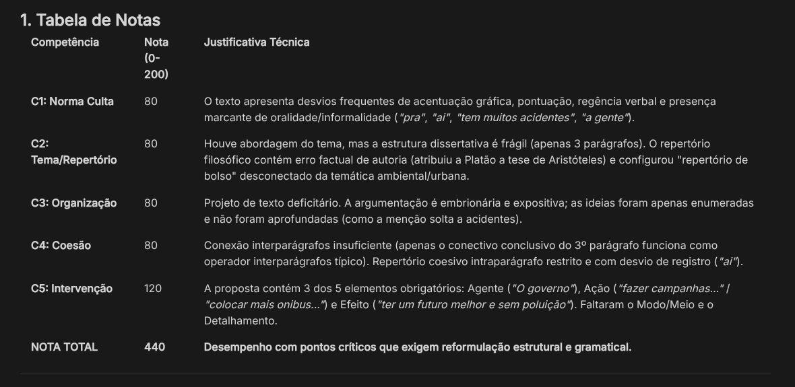

Apenas querendo compartilhar tudo o que eu faço sobre tecnologia, e querendo rechear a minha carreira e profissão.
Atualmente Técnico em TI e me formando como Cientista da Computação.
Busco aplicar meus conhecimentos técnicos para criar soluções que tenham relevância real no dia a dia das pessoas, unindo eficiência técnica com propósito social.
Plataforma centralizada para gestão e partilha de informações. Desenvolvido com foco em escalabilidade e código limpo.
Dashboard para aplicativo de segurança pessoal disfarçado. Focado no combate à violência doméstica e feminicídio.
Dashboard de monitoramento de resíduos urbanos focado na prevenção de enchentes. Uma solução tecnológica criada para conscientizar.
Dashboard de aplicação de controle financeiro desenvolvida durante o Lab Vibe Coding da DIO.
Repositório centralizado de estudos, scripts e automações em formato de códice tecnológico e conhecimento estruturado.
Laboratório prático focado em ferramentas de monitoramento de infraestrutura de TI, análise de métricas e gerenciamento de rede.
Ambiente de laboratório desenvolvido para práticas e testes de segurança em ambientes de nuvem (Cloud Computing).
Ferramenta focada na auditoria e análise de pilhas tecnológicas para avaliação de eficiência energética e sustentabilidade de software.
Agente de IA pessoal desenvolvido para automação de tarefas e gerenciamento avançado de conhecimento.
Repositório dedicado ao aprendizado da linguagem C, cobrindo lógica e memória.

Arquitetura de prompt complexa para simular a correção oficial do ENEM baseada na Matriz de Referência do Inep. O sistema extrai dados, avalia 5 competências e gera uma tabela analítica em Markdown.
Ficou com alguma dúvida sobre a arquitetura ou quer testar a inteligência conversacional do agente interativo?
Meus estudos teóricos, pesquisas e preparações acadêmicas.
Pesquisa estruturada em LaTeX que investiga o impacto da afetividade na alfabetização infantil. O estudo propõe o uso de algoritmos lógicos e gamificação para engajar as crianças na era digital.
Abordagem baseada em Aprendizado de Máquina para estimar o Estado de Saúde (SoH) de baterias de íons de lítio. Este estudo prático terá continuação futuramente na minha matéria de Ciência de Dados.
Relatório técnico da disciplina de Visão Computacional, detalhando os mecanismos essenciais de otimização de IA, com foco em Backpropagation e Gradiente Descendente.
Relatório técnico de conclusão do curso técnico focando no desenvolvimento completo de uma estação de Arcade integrado a sistemas operacionais e arquitetura física de hardware.
Clique para visualizar os certificados oficiais.
Estou sempre aberto a novas conexões, projetos e oportunidades.